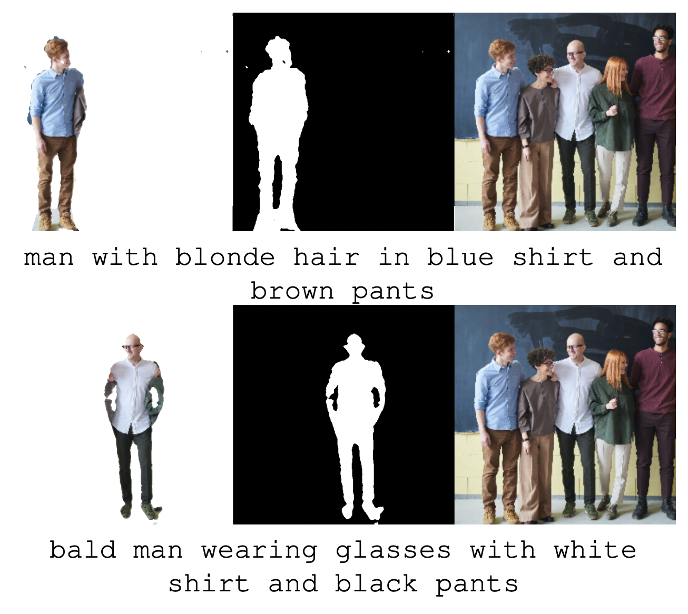
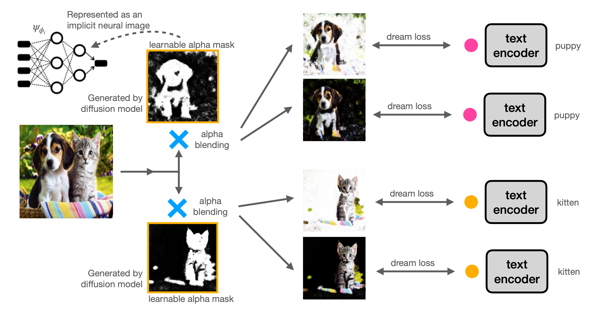

|
|
|
|
|
|

|
|
Peekaboo is a zero-shot segmentation algorithm, that takes in an image and a prompt to find the corresponding image region.
This is, to our knowledge, the first open-vocabulary segmentation algorithm that is aware of pop references as well as more basic tasks. What's more - it doesn't need to be trained to do this, as it uses Stable Diffusion's weights off the shelf (without fine-tuning).
In this paper, we show that diffusion based text-to-image models can perform zero-shot segmentation.
Our implementation is publicly available.
|
|
Recent diffusion-based generative models combined with vision-language models are capable of creating
realistic images from natural language prompts. While these models are trained on large internet-scale
datasets, such pre-trained models are not directly introduced to any semantic localization or grounding.
Most current approaches for localization or grounding rely on human-annotated localization information
in the form of bounding boxes or segmentation masks. The exceptions are a few unsupervised methods that
utilize architectures or loss functions geared towards localization, but they need to be trained
separately. In this work, we explore how off-the-shelf diffusion models, trained with no exposure to
such localization information, are capable of grounding various semantic phrases with no segmentation
specific re-training. An inference time optimization process is introduced, that is capable of generating
segmentation masks conditioned on natural language. We evaluate our proposal Peekaboo for unsupervised
semantic segmentation on the Pascal VOC dataset. In addition, we evaluate for referring segmentation on
the RefCOCO dataset. In summary, we present a first zero-shot, open-vocabulary, unsupervised (no localization
information), semantic grounding technique leveraging diffusion-based generative models with no re-training.
|
|

|
|
Overview of Peekaboo Architecture: The image to be segmented is subject to alpha compositing with a learnable mask
represented as an implicit neural image. The composite image and text prompt relating to the image region to be segmented are fed to
our proposed dream loss, which is optimized iteratively. At the end of optimization, the implicit neural image converges to the
optimal segmentation mask. We highlight that our dream loss is used only for learning a mask and not for any re-training of the diffusion
model.
|